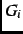
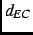
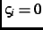
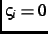
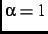
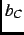
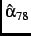
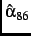
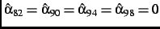

Next: Moderation, Institutional Balancing and
Up: Coordination and Policy Moderation
Previous: Definitions of Empirical Choice
The coordinating and nonstrategic models produce similar results. Maximum
likelihood estimates [MLEs] and standard errors [SEs] for the parameters of
the models, using observed attribute specifications (12a-c) and
(17a-c) with  defined by (13), appear in
Table 1.footnote All of the parameters that have the same interpretation in both
models have statistically indistinguishable estimates. The MLEs for
are near zero for every year except 1990, suggesting that for the most part
retrospective economic evaluations do not affect choices between
candidates.footnote Except for 1994, the MLEs for
 are statistically insignificant, so that retrospective economic
evaluations appear also to have no systematic effect on the choice not to
vote. The MLEs for the party identification dummy variables show the familiar
effects of party identification on candidate choices and turnout. The MLEs
for  and point to a substantial incumbent advantage, while
the MLEs for and show losses from not voting to be smaller
when the incumbent is running for reelection. Greater subjective political
efficacy, higher education, greater age, being married and having lived longer
at one's current residence all increase the loss from not voting and so
increase the probability of voting. An elector who does not report at least
one complete set of policy position values (
) has a
substantially smaller loss from not voting than does an elector who does
report policy positions; so the elector who lacks policy positions is much
more likely not to vote. For 1994 and 1998 there is a significant tendency
for electors who have higher values of to be more likely to vote
than electors who have lower values of : conservative electors were
especially mobilized in those two elections.
and point to a substantial incumbent advantage, while
the MLEs for and show losses from not voting to be smaller
when the incumbent is running for reelection. Greater subjective political
efficacy, higher education, greater age, being married and having lived longer
at one's current residence all increase the loss from not voting and so
increase the probability of voting. An elector who does not report at least
one complete set of policy position values (
) has a
substantially smaller loss from not voting than does an elector who does
report policy positions; so the elector who lacks policy positions is much
more likely not to vote. For 1994 and 1998 there is a significant tendency
for electors who have higher values of to be more likely to vote
than electors who have lower values of : conservative electors were
especially mobilized in those two elections.
*** Table
1 about here ***
The coordinating model passes the tests of the conditions necessary for it to
describe coordinating behavior. Table 2 reports the LR test
statistics for the constraint , imposed separately for each year.
The constraint is rejected in every year. The 95% confidence intervals shown
in Table 3 support the same conclusions.footnote Regarding the other necessary conditions, 95%
confidence intervals computed as in Table 3 show (1.28, 1.81)
and  (1.10, 1.90) to be positive and bounded well away from zero.
*** Tables
2 and
3 about here ***
For most years the MLEs for the nonstrategic model do not support the
theory of nonstrategic institutional balancing to produce policy moderation.
Only two of the six MLEs for (
 and
) are statistically distinguishable from zero;
.
Rather than moderating, the estimates suggest that in most years electors are
making direct choices between the parties' alternative policies.
The log-likelihood of the coordinating model () is not much greater
than that of the nonstrategic model (). Nonetheless the nonnested
hypothesis test of Vuong (1989) rejects the nonstrategic model as an
alternative to the coordinating model.footnote
Next: Moderation, Institutional Balancing and
Up: Coordination and Policy Moderation
Previous: Definitions of Empirical Choice
Jasjeet S. Sekhon
2001-06-28